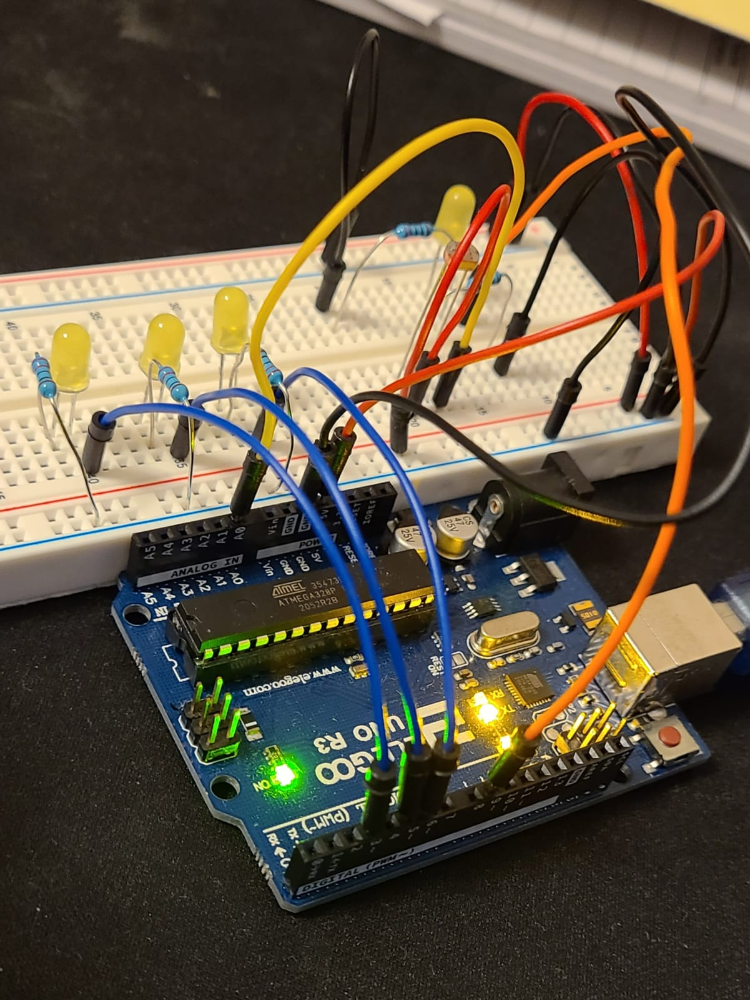
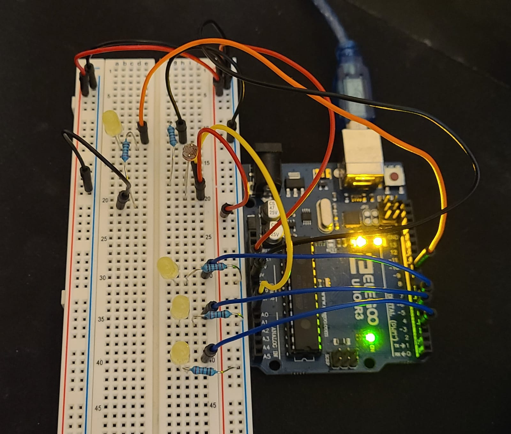
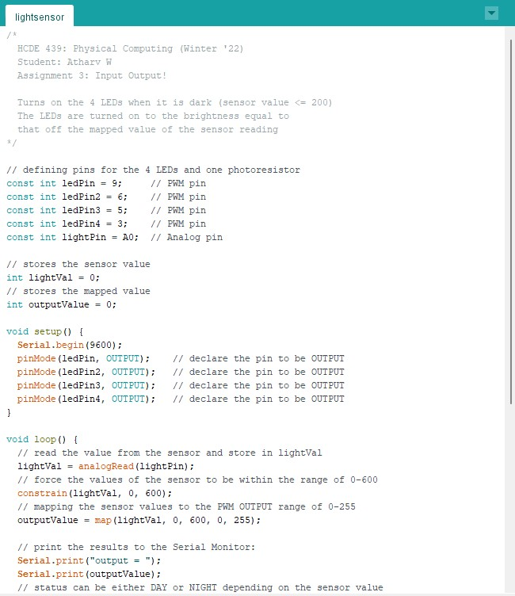
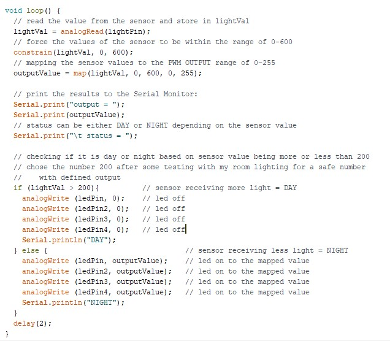

Circuit


Here are some photos of the breadboard circuit where you can see all the
connections from different angles.

Here are some calculations to figure out the resistance needed. Since it was
either 250 or 160 ohms,
I decided to use the 220 ohm resistor for all since I didn't need them to be a specific brightness.
Firmware


Here is the Arduino code I wrote and used for this button/fade pattern:
/*
HCDE 439: Physical Computing (Winter '22)
Student: Atharv W
Assignment 3: Input Output!
Turns on the 4 LEDs when it is dark (sensor value <= 200)
The LEDs are turned on to the brightness equal to
that off the mapped value of the sensor reading
*/
// defining pins for the 4 LEDs and one photoresistor
const int ledPin = 9; // PWM pin
const int ledPin2 = 6; // PWM pin
const int ledPin3 = 5; // PWM pin
const int ledPin4 = 3; // PWM pin
const int lightPin = A0; // Analog pin
// stores the sensor value
int lightVal = 0;
// stores the mapped value
int outputValue = 0;
void setup() {
Serial.begin(9600);
pinMode(ledPin, OUTPUT); // declare the pin to be OUTPUT
pinMode(ledPin2, OUTPUT); // declare the pin to be OUTPUT
pinMode(ledPin3, OUTPUT); // declare the pin to be OUTPUT
pinMode(ledPin4, OUTPUT); // declare the pin to be OUTPUT
}
void loop() {
// read the value from the sensor and store in lightVal
lightVal = analogRead(lightPin);
// force the values of the sensor to be within the range of 0-600
constrain(lightVal, 0, 600);
// mapping the sensor values to the PWM OUTPUT range of 0-255
outputValue = map(lightVal, 0, 600, 0, 255);
// print the results to the Serial Monitor:
Serial.print("output = ");
Serial.print(outputValue);
// status can be either DAY or NIGHT depending on the sensor value
Serial.print("\t status = ");
// checking if it is day or night based on sensor value being more or less than 200
// chose the number 200 after some testing with my room lighting for a safe number
// with defined output
if (lightVal > 200){ // sensor receiving more light = DAY
analogWrite (ledPin, 0); // led off
analogWrite (ledPin2, 0); // led off
analogWrite (ledPin3, 0); // led off
analogWrite (ledPin4, 0); // led off
Serial.println("DAY");
} else { // sensor receiving less light = NIGHT
analogWrite (ledPin, outputValue); // led on to the mapped value
analogWrite (ledPin2, outputValue); // led on to the mapped value
analogWrite (ledPin3, outputValue); // led on to the mapped value
analogWrite (ledPin4, outputValue); // led on to the mapped value
Serial.println("NIGHT");
}
delay(2);
}